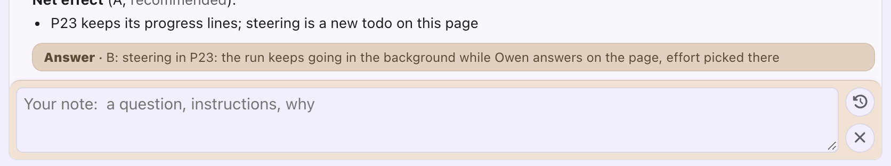
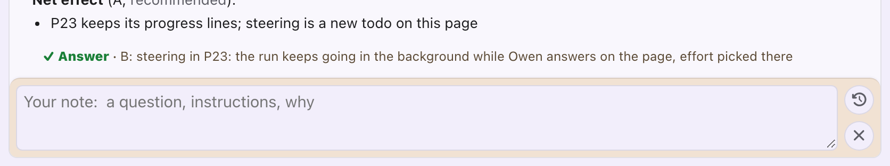
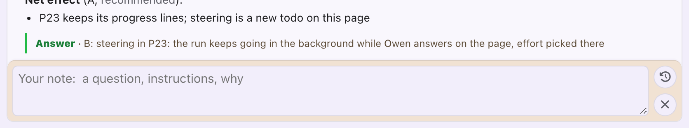
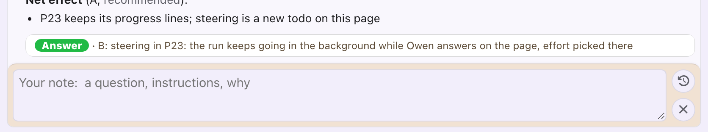
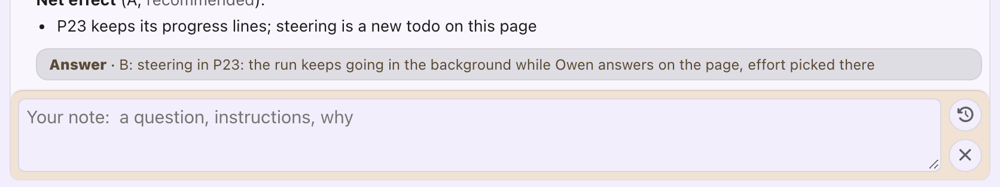
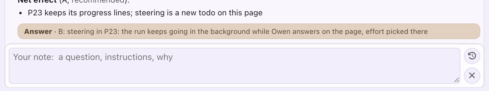
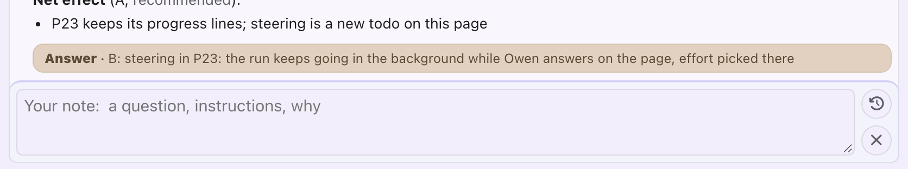
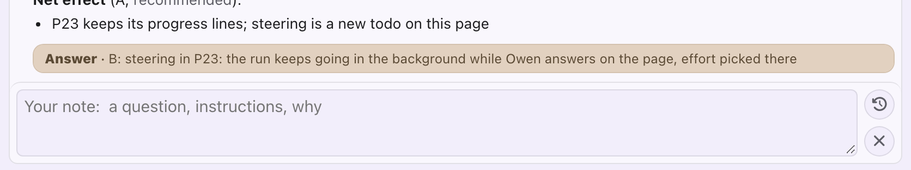

Answer strip and comment box: alternatives
How an answered question's open drawer looks: the "Answer" strip and the comment box's tan frame. Pick a look for each; today's is first, for reference.
epic-engine -- the epic tooling: how epic pages look and work.- The answer strip: a tan bar, "Answer · B: ...", the answer in short.
- The comment box: the ivory note box under it, in a tan frame (tan says "yours, Owen").
- Both tans together read as one muddy block at the drawer's bottom.

How should the line saying what was answered look?
No fill: a green check and "Answer", then the answer, like the drawer's other lines. Green says "decided", as the Q chip does.

No fill; a green rule on its left, as a quote. A little louder than A.

A white one-line card, "Answer" in a green pill: stands out most.

Today's strip, grey instead of tan.

What colour should the frame round the comment box be? (The text field inside it keeps its look.)
A light frame and a thin grey rule, like the drawer around it: the box reads as the drawer's bottom, not a separate tan block.

A faint violet frame: ties the box to the page's accent.

No fill or frame: only the text field, on the drawer, a thin rule above it. Quietest.

As today (the picture in 1. Today).